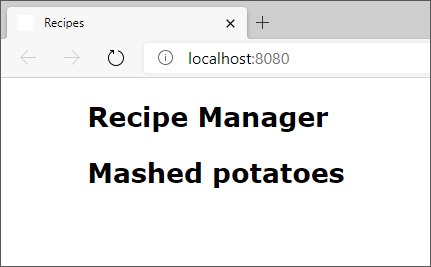

Os componentes permitem dividir um aplicativo em partes lógicas. Nesta unidade, exploraremos essa funcionalidade criando um componente para o título de uma receita. Vamos criar componentes e importá-los para App. Também exploraremos como exibir dados de forma dinâmica.
Para exibir dados dinâmicos dentro de um componente, use a sintaxe { }, às vezes chamada de handlebars. Esse estilo de sintaxe é relativamente comum em ferramentas de modelagem de HTML. Use esses handlebars para mudar efetivamente para o modo JavaScript e executar quase qualquer JavaScript válido.
Por exemplo, para exibir a hora atual, você pode usar o seguinte código:
JavaScript
<div>{ Date.now() }</div>
Em nosso exemplo, criaremos um componente para o título de uma receita. Vamos usar uma variável JavaScript para o título para mostrar como o React pode exibir dados dinâmicos. As futuras unidades mostrarão como trabalhar com dados mais complexos.
jsx
import React from 'react';
function RecipeTitle() {
const title = 'Mashed potatoes';
return (
<h2>{ title }</h2>
)
};
export default RecipeTitle;
Observe que criamos uma constante chamada title. Em seguida, usamos a sintaxe handlebar { } para informar ao React que queremos exibir o valor de title dentro do elemento <h2>. Esse recurso do JSX nos permite combinar JavaScript e HTML.
Vamos exibir RecipeTitle em nosso aplicativo adicionando-o a App.
JavaScript
import RecipeTitle from './RecipeTitle'
jsx
<RecipeTitle />
Aqui está o conteúdo completo do arquivo src/App.jsx agora:
jsx
import React from 'react';
import RecipeTitle from './RecipeTitle'
function App() {
return (
<article>
<h1>Recipe Manager</h1>
<RecipeTitle />
</article>
)
}
export default App;
Praticamente da mesma forma que usamos <App /> como um elemento HTML, podemos usar RecipeTitle. Esse exemplo mostra a essência da criação de aplicativos do React: você cria e usa componentes para compilar seu aplicativo.
Salve todos os arquivos. O navegador deve ser atualizado automaticamente e exibir a página atualizada. O título Purê de batata é exibido na parte superior da página.
